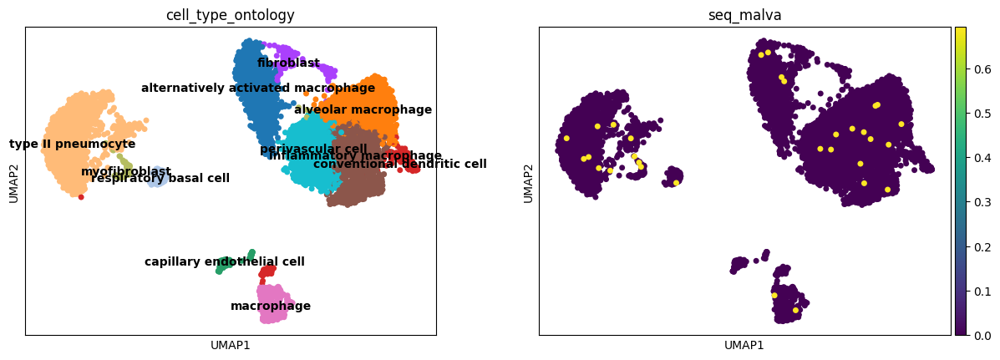
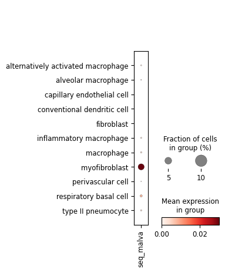
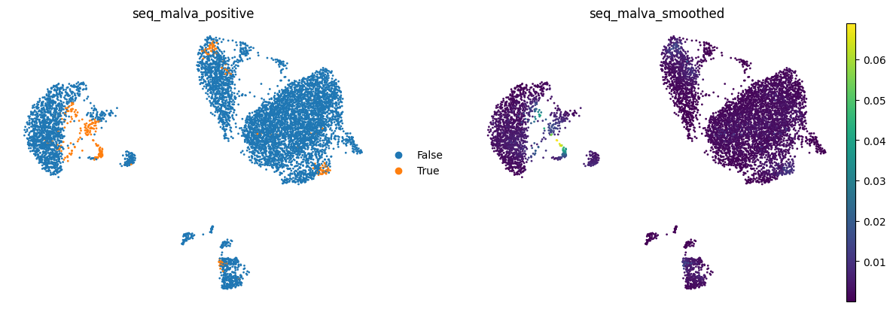
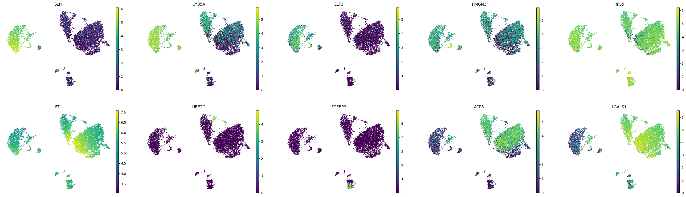
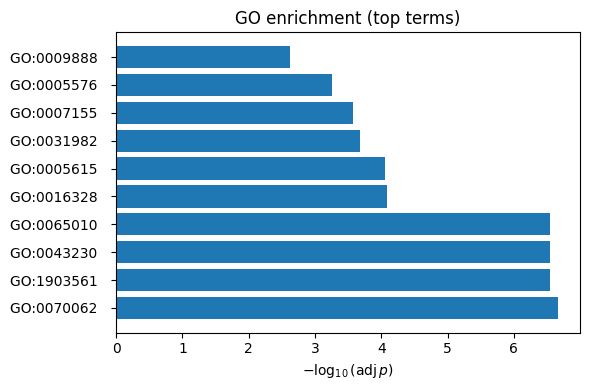

Projecting requantified expression of arbitrary sequences to single cells¶
1. Login and Connecting to the Malva Index¶
From the previous notebook 00_setup_malva_client.ipynb, paste here the API_TOKEN you got from us, or if you login with ORCID, generate a new one from your user profile in https://malva.mdc-berlin.de
[ ]:
API_TOKEN = "" # place your API token here
Then, you are ready to use the malva_client
[2]:
import dnaio
from malva_client import MalvaClient
from malva_client.tools import mask_sequence
client = MalvaClient("https://malva.mdc-berlin.de", API_TOKEN)
INFO:malva_client.client:Connected to Malva API: operational
INFO:malva_client.client:Authenticated successfully: free account
You also need to install scanpy for downstream analysis
[ ]:
!pip install scanpy
2. Searching all cells¶
Malva enables requantification of any sequence across all cells in the index, with projection to gene expression data
The workflow has these steps:
Requantification: of any arbitrary sequence, e.g., endogenous retroviruses, pathogens, synthetic constructs…
Sample retrieval: Retrieve cells for any samples where the sequence is found
Feature projection: Map Malva quantifications onto single-cell data
Differential analysis: Compare positive vs. negative cell populations
Pathway enrichment: Identify biological processes associated with your sequence
This workflow identifies cellular mechanisms correlated with expression
3.1 Quantifying a feature across the Malva Index¶
Again, we create a query for the RNA sequence in the file
[3]:
with dnaio.open("rna.fna") as f_in:
for s in f_in:
seq = s.sequence
break
search_result = client.search_sequences(seq, aggregate_expression=False)
results = client.retrieve_cells(search_result)
INFO:malva_client.client:Search submitted: job_id=6a4f1822-e32b-4614-b5ec-661123b6930b, status=pending
INFO:malva_client.client:search status: running
INFO:malva_client.client:search status: running
INFO:malva_client.client:search status: completed
INFO:malva_client.client:search completed: 6a4f1822-e32b-4614-b5ec-661123b6930b
[4]:
df_cells = results.to_dataframe(normalized=True, include_sample_metadata=True)
df_cells['expression'] = df_cells.get('normalized_value', df_cells['value']).fillna(df_cells['value'])
[42]:
# we just select one of the samples arbitrarily
sample_col = 'uuid' if 'uuid' in df_cells.columns else 'sample_id'
selected_sample = df_cells[sample_col].dropna().unique()[5]
[43]:
# we can look at the metadata
df_cells[df_cells[sample_col] == selected_sample][['project.contributors.laboratory',
'project.project_core.project_short_name',
'project.project_core.project_title',
'protocol_harmonized',
'specimen_from_organism.organ',
'development_stage']].drop_duplicates().T
[43]:
| 296 | |
|---|---|
| project.contributors.laboratory | None |
| project.project_core.project_short_name | lungPopulationsIPF |
| project.project_core.project_title | Single-cell RNA-seq reveals ectopic and aberra... |
| protocol_harmonized | sc_10x_v2 |
| specimen_from_organism.organ | lung |
| development_stage | human adult stage |
Now we take a look at the summary and pick one of the top samples that might be interesting, in this case, we can take one of the positive samples.
[44]:
sample = client.download_sample(selected_sample)
# we remove the raw data so we show the DE in normalised counts
del sample.raw
INFO:malva_client.client:Downloading pseudoquant_annotated_llm_obo.h5ad (56,382,377 bytes)
Downloading: 100.0% (56,382,377/56,382,377 bytes)
INFO:malva_client.client:Loaded sample 05c9c099-8716-490c-bb75-36bc050dad8f into memory
[45]:
import scanpy as sc
import matplotlib.pyplot as plt
[46]:
# we select the specific sample
sample_cells = df_cells[df_cells[sample_col] == selected_sample].copy()
# we assign to the sample cells, filling cells without sequence signal with zero
import numpy as np
signal = sample_cells.groupby(sample_cells['cell_id'].astype(str))['expression'].sum()
sample.obs['seq_malva'] = np.log1p(signal).reindex(sample.obs_names.astype(str)).fillna(0).to_numpy()
[47]:
sc.pl.umap(sample, color=['cell_type_ontology', 'seq_malva'], legend_loc='on data', size=100)

[48]:
sc.pl.dotplot(sample, ['seq_malva'], groupby='cell_type_ontology')

[49]:
from malva_client.tools import score_correlated_features
thr, pos, neg = score_correlated_features(
sample,
feature_key="seq_malva",
method="gmm",
gmm_components=2,
n_markers=5,
significance=0.05,
show=True,
smooth_alpha=0.5,
smooth_iterations=10,
smooth_neighbors=True
)
thr, pos, neg = score_correlated_features(
sample,
feature_key="seq_malva",
method="gmm",
gmm_components=2,
n_markers=50,
significance=0.01,
show=False,
smooth_alpha=0.5,
smooth_iterations=10,
smooth_neighbors=True
)
Applied neighbor smoothing with alpha=0.5, iterations=10
Smoothed values stored in adata.obs['seq_malva_smoothed']


[50]:
from malva_client.tools import run_go_enrichment
res = run_go_enrichment(
pos,
organism = "hsapiens",
significance = 0.05,
top_n = 10,
plot = True
)
native name p_value intersection_size
GO:0070062 extracellular exosome 2.160557e-07 21
GO:1903561 extracellular vesicle 2.796894e-07 21
GO:0043230 extracellular organelle 2.820858e-07 21
GO:0065010 extracellular membrane-bounded organelle 2.820858e-07 21
GO:0016328 lateral plasma membrane 8.094848e-05 5
GO:0005615 extracellular space 8.910617e-05 22
GO:0031982 vesicle 2.097579e-04 24
GO:0007155 cell adhesion 2.630482e-04 16
GO:0005576 extracellular region 5.580382e-04 24
GO:0009888 tissue development 2.380788e-03 17
